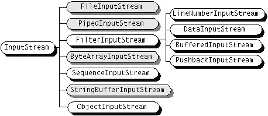
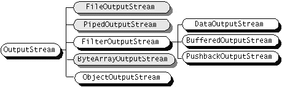
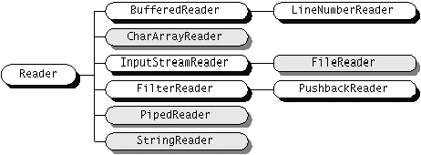
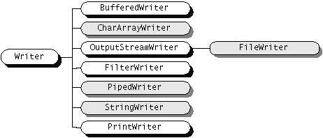

StrumieÒ danych jest pojÍciem abstrakcyjnym, logicznym.
Oznacza ciπg danych, w≥aúnie ÑstrumieÒî, do ktÛrego dane mogπ byÊ dodawane i z ktÛrego dane mogπ byÊ pobierane. Przy czym:
|
| Wejúcie | Wyjúcie | |
| Strumienie bajtowe | InputStream | OutputStream |
| Strumienie znakowe | Reader | Writer |
import java.io.*;
class Stream {
static void copy(InputStream in, OutputStream out) throws IOException {
int c;
while ((c = in.read()) != -1) out.write(c);
}
static void copy(Reader in, Writer out) throws IOException {
int c;
while ((c = in.read()) != -1) out.write(c);
}
}
Uwaga: metoda read() zwraca liczbÍ ca≥kowitπ, reprezentujπcπ kolejny znak
ze strumienia znakowego (lub bajt ze strumienia bajtowego) albo wartoúÊ -1
gdy czytanie siÍga poza koniec pliku.| èrÛd≥o/odbiornik | Strumienie znakowe | Strumienie bajtowe |
|---|---|---|
| PamiÍÊ | CharArrayReader, CharArrayWriter | ByteArrayInputStream, ByteArrayOutputStream |
| StringReader, StringWriter | StringBufferInputStream | |
| Potok | PipedReader, PipedWriter | PipedInputStream, PipedOutputStream |
| Plik | FileReader, FileWriter | FileInputStream, FileOutputStream |
class StreamCopy1 {
static public void main(String[] args) {
try {
FileReader in1 = new FileReader("plik0.txt");
FileWriter out1 = new FileWriter("plik1.txt");
Stream.copy(in1, out1);
in1.close();
out1.close();
String msg = "Ala ma kota";
StringReader in2 = new StringReader(msg);
FileWriter out2 = new FileWriter("plik2.txt");
Stream.copy(in2, out2);
in2.close();
out2.close();
} catch(IOException exc) {
exc.printStackTrace();
}
}
}
Komentarze:| Rodzaj przetwarzania | Strumienie znakowe | Strumienie bajtowe |
|---|---|---|
| Buforowanie | BufferedReader,
BufferedWriter | BufferedInputStream,
BufferedOutputStream |
| Filtrowanie | FilterReader,
FilterWriter | FilterInputStream,
FilterOutputStream |
| Konwersja: bajty-znaki | InputStreamReader,
OutputStreamWriter | |
| Konkatenacja | SequenceInputStream | |
| Serializacja obiektÛw | ObjectInputStream,
ObjectOutputStream | |
| Konwersje danych | DataInputStream,
DataOutputStream | |
| Zliczanie wierszy | LineNumberReader | LineNumberInputStream |
| Podglπdanie | PushbackReader | PushbackInputStream |
| Drukowanie | PrintWriter | PrintStream |
Komentarze:
Moøna tworzyÊ w≥asne filtry.
Klasy dla strumieni bajtowych


ØrÛd≥o: Java Tutorial, Sun Microsystems 2002
Klasy dla strumieni znakowych


ØrÛd≥o: Java Tutorial, Sun Microsystems 2002FileReader fr = new FileReader("plik.txt"); // tu powstaje zwiπzek
// z fizycznym ürÛd≥em
BufferedReader br = new BufferedReader(fr); // tu dodajemy "opakowanie"
// umoøliwiajπce buforowanie
// czytamy wiersz po wierszu
String line;
while ((line = br.readLine()) != null) { // kolejny wiersz pliku:
// metoda readLine zwraca wiersz
// lub null jeúli koniec pliku
// ... tu coú robimy z odczytanym wierszem
}
Uwagi.import java.io.*;
class Lines {
public static void main(String args[]) {
try {
FileReader fr = new FileReader(args[0]);
LineNumberReader lr = new LineNumberReader(fr);
BufferedWriter bw = new BufferedWriter(
new FileWriter(args[1]));
String line;
while ((line = lr.readLine()) != null) {
bw.write( lr.getLineNumber() + " " + line);
bw.newLine();
}
lr.close();
bw.close();
} catch(IOException exc) {
System.out.println(exc.toString());
System.exit(1);
}
}
}
Komentarze:import java.io.*;
class Obs {
String name;
double[] data;
public Obs() {}
public Obs(String nam, double[] dat) {
name = nam;
data = dat;
}
public void writeTo(DataOutputStream dout)
throws IOException {
dout.writeUTF(name);
dout.writeInt(data.length);
for (int i=0; i<data.length; i++) dout.writeDouble(data[i]);
}
public Obs readFrom(DataInputStream din)
throws IOException {
name = din.readUTF();
int n = din.readInt();
data = new double[n];
for (int i=0; i<n; i++) data[i] = din.readDouble();
return this;
}
public void show() {
System.out.println(name);
for (int i=0; i<data.length; i++) System.out.print(data[i] + " ");
System.out.println("");
}
}
ZwrÛÊmy uwagÍ, øe przyjÍliúmy nastÍpujπcy format zapisu obserwacji w pliku binarnym:class BinDat {
public static void main(String args[]) {
double[] a = { 1, 2, 3, 4 };
double[] b = { 7, 8, 9, 10 };
Obs obsA = new Obs("Dane A", a);
Obs obsB = new Obs("Dane B", b);
obsA.show();
obsB.show();
try {
DataOutputStream out = new DataOutputStream(
new FileOutputStream("dane")
);
obsA.writeTo(out);
obsB.writeTo(out);
out.close();
DataInputStream in = new DataInputStream(
new FileInputStream("dane")
);
new Obs().readFrom(in).show();
new Obs().readFrom(in).show();
in.close();
} catch (IOException exc) {
exc.printStackTrace();
System.exit(1);
}
}
}
public class DefaultEncoding {
public static void main(String args[])
{
String p = System.getProperty("file.encoding");
System.out.println(p);
}
}
W zaleønoúci od ustawieÒ na danej platformie otrzymamy rÛøne wyniki. Np. ibm-852 lub Cp852 (Latin 2) albo Cp1252 (Windows Western Europe / Latin-1).
Inna wersja konstruktorÛw pozwala na podanie stron kodowych, ktÛre bÍdπ uøywane do kodownia i dekodowania bajty-znaki .import java.io.*;
class Convert {
public static void main(String[] args) {
if (args.length != 4) {
System.out.println("Syntax: in in_enc out out_enc");
System.exit(1);
}
String infile = args[0], // plik wejúciowy
in_enc = args[1], // wejúciowa strona kodowa
outfile = args[2], // plik wyjúciowy
out_enc = args[3]; // wyjúciowa strona kodowa
try {
FileInputStream fis = new FileInputStream(infile);
BufferedReader in = new BufferedReader(new InputStreamReader(fis, in_enc));
FileOutputStream fos = new FileOutputStream(outfile);
BufferedWriter out = new BufferedWriter(new OutputStreamWriter(fos, out_enc));
String line;
while ((line = in.readLine()) != null) {
out.write(line);
out.newLine();
}
in.close();
out.close();
} catch (IOException e) {
System.err.println(e);
System.exit(1);
}
}
}
Przyk≥adowe wykorzystanie do konwersji pliku zle.htm (zapisanego w Windows 1250) na plik dobrze.htm ( ISO-8859-2):
java Convert zle.htm Cp1250 dobrze.htm ISO8859_2
Podstawowe zastosowania serializacji:
|
import java.io.*;
import java.util.*;
class Serial {
public static void main(String args[]) {
Date data = new Date();
int[] temperatura = { 25, 19 , 22};
String[] opis = { "dzieÒ", "noc", "woda" };
// Zapis
try {
ObjectOutputStream out = new ObjectOutputStream(
new FileOutputStream("test.ser")
);
out.writeObject(data);
out.writeObject(opis);
out.writeObject(temperatura);
out.close();
} catch(IOException exc) {
exc.printStackTrace();
System.exit(1);
}
// Odtworzenie (zazwyczaj w innym programie)
try {
ObjectInputStream in = new ObjectInputStream(
new FileInputStream("test.ser")
);
Date odczytData = (Date) in.readObject();
String[] odczytOpis = (String[]) in.readObject();
int[] odczytTemp = (int[]) in.readObject();
in.close();
System.out.println(String.valueOf(odczytData));
for (int i=0; i<odczytOpis.length; i++)
System.out.println(odczytOpis[i] + " " + odczytTemp[i]);
} catch(IOException exc) {
exc.printStackTrace();
System.exit(1);
} catch(ClassNotFoundException exc) {
System.out.println("Nie moøna odnaleüÊ klasy obiektu");
System.exit(1);
}
}
}
Przyk≥adowy wydruk programu.public class Travel ... {
private String dest; // destynacja podrÛzy
private int price; // cena
public Travel(String s, int p) {
dest = s;
price = p;
}
public String getDest() { return dest; }
public int getPrice() { return price; }
public String toString() { return dest + ", cena: " + price; }
}
public class TravelSearcher ... {
private Travel[] travel; // tablica podrÛøy
private int lastIndex = -1; // indeks ostatnio zapisanej
private final int MAX_COUNT = 5; // max rozmiar tablicy
private boolean sorted = false; // czy jest posortowana
// Konstruktor: tworzy tablicÍ
public TravelSearcher() {
travel = new Travel[MAX_COUNT];
}
// Metoda add dodaje nowy element do tablicy
// jeøeli przekrozcono zakres
// - zg≥aszany jest wyjπtek w≥asnej klasy NoSpaceForTravelException
public void add(Travel t) throws NoSpaceForTravelException {
try {
lastIndex++;
travel[lastIndex] = t;
} catch (ArrayIndexOutOfBoundsException exc) {
lastIndex--;
throw new NoSpaceForTravelException("Brakuje miejsca dla dodania podrÛøy");
}
sorted = false;
}
// Jaki jest ostatni zapisany indeks
public int getLastIndex() { return lastIndex; }
// Wyszukiwanie podrÛøy na podstawie podanego celu (destynacji)
public Travel search(String dest) {
if (!sorted) sortByDest();
// ... wyszukiwanie binarne
}
// Sortowanie - aby moøna by≥o stosowaÊ wyszukiwanie binarne
private void sortByDest() {
// ... sortowanie
sorted = true;
}
public String toString() {
// zwraca spis podrÛøy z tablicy travel (destynacji i cen)
}
}
Ale nie sπ zapisywane stany obiektÛw sk≥adowych, ktÛre naleøπ do klas nieserializowalnych. Bo choÊ pola, odpowiadajπce tym obiektom sπ zapisywane, to przy odtwarzaniu, takie obiekty sπ tworzone za pomocπ konstruktorÛw bezparametrowych z ich klas i nie ma øadnej innej inicjacji ich elementÛw.
Musimy zatem zapewniÊ rÛwnieø serializacjÍ obiektÛw klasy Travel:
Argumentem aplikacji jest plik "kartoteka", ktÛry zawiera lub bÍdzie
zawiera≥ utrwalony obiekt klasy TravelSearcher. Jeøeli taki plik juø istnieje,
to informacje o wycieczkach sπ z niego odtwarzana za pomoca deserializacji
utrwalonego obiektu. Uøytkownik ma do wyboru rÛøne tryby dzia≥ania (np. wprowadzanie nowych
danych, ich wyszukiwanie i - oczywiúcie - utrwalenie.
import java.io.*;
import java.util.*;
import javax.swing.*;
public class TravelApp {
private String travFileName;
private TravelSearcher travels;
private boolean dataSaved = false;
public TravelApp(String[] tfn) {
try {
travFileName = tfn[0];
ObjectInputStream in = new ObjectInputStream(
new FileInputStream(travFileName)
);
travels = (TravelSearcher) in.readObject();
in.close();
} catch(ArrayIndexOutOfBoundsException exc) {
showMsg("Syntax: java TravelApp plik_kartoteki");
System.exit(1);
} catch(FileNotFoundException exc) {
showMsg("Nowa kartoteka!!!");
travels = new TravelSearcher();
} catch(IOException exc) {
exc.printStackTrace();
System.exit(2);
} catch(ClassNotFoundException exc) {
showMsg("Brak klasy dostÍpu do klasy TravelSearcher");
System.exit(3);
}
String[] modes = { "Wprowadzanie", "Szukanie", "Zapis", "Pokaz", "Koniec" };
while (true) {
switch ( select("Wybierz tryb dzia≥ania", modes)) {
case 'W' : inputData(); break;
case 'S' : searchData(); break;
case 'Z' : saveData(); break;
case 'P' : showData(); break;
case 'K' : finish(); break;
default : break;
}
}
}
private char select(String msg, String[] modes) {
int sel = JOptionPane.showOptionDialog(null, msg,
"Travel App", 0, JOptionPane.QUESTION_MESSAGE,
null, modes, modes[1]);
if (sel == JOptionPane.CLOSED_OPTION) return 0;
return modes[sel].charAt(0);
}
public void inputData() {
String data = "";
String msg = "Wprowadü dane";
while((data = ask(msg, data)) != null) {
StringTokenizer st = new StringTokenizer(data);
try {
String dest = st.nextToken();
int price = Integer.parseInt(st.nextToken());
travels.add(new Travel(dest, price));
dataSaved = false;
} catch(NoSpaceForTravelException exc) {
showMsg(exc.getMessage());
return;
} catch(Exception exc) {
msg = "Dane wadliwe - popraw";
continue;
}
msg = "Wprowadü dane";
data = "";
}
}
public void searchData() {
if (travels.getLastIndex() >= 0) {
String dest = "";
String msg = "Podaj miejsce podrÛøy";
while((dest = ask(msg, "")) != null) {
Travel t = travels.search(dest);
String info = (t == null ? "Nie ma takiej podrÛøy!" : t.toString() );
showMsg(info);
}
}
else showMsg("Nie ma øadnych danych do przeszukiwania!");
}
public void saveData() {
ObjectOutputStream out = null;
try {
out = new ObjectOutputStream(
new FileOutputStream(travFileName)
);
out.writeObject(travels);
} catch(IOException exc) {
showMsg(exc.getMessage());
} finally {
try { out.close(); } catch (Exception exc) {}
}
dataSaved = true;
}
public void showData() {
System.out.println("Dane\n" + travels);
}
public void finish() {
while (!dataSaved) {
char ans = select("Czy zapisaÊ dane?", new String[] { "Tak", "Nie" } );
if (ans == 'T') saveData();
else if (ans == 'N') break;
}
System.exit(0);
}
private void showMsg(String msg) {
JOptionPane.showMessageDialog(null, msg);
}
private String ask(String msg, String initVal) {
return JOptionPane.showInputDialog(null, msg, initVal);
}
public static void main(String[] args) {
new TravelApp(args);
}
}
Na koniec warto powiedzieÊ, øe:
private void readObject(java.io.ObjectInputStream stream)
throws IOException, ClassNotFoundException;
private void writeObject(java.io.ObjectOutputStream stream)
throws IOException
class DataPutter extends Thread {
OutputStream out;
public DataPutter(OutputStream o) {
out = o;
}
public void run() {
try {
for (char c = 'a'; c <= 'z'; c++) out.write(c);
out.close();
} catch(IOException exc) { return; }
}
}
class DataGetter extends Thread {
InputStream in;
public DataGetter(InputStream i) {
in = i;
}
public void run() {
try {
int c;
while ((c = in.read()) != -1) System.out.println((char) c);
} catch(IOException exc) { return; }
}
}
PipedOutputStream pout = new PipedOutputStream();i potok ten po≥πczymy ze strumieniem wejúciowym, z ktÛrego bÍdzie czyta≥ DataGetter.
PipedInputStream pin = new PipedInputStream(pout);
class Main {
public static void main(String[] args) throws IOException {
PipedOutputStream pout = new PipedOutputStream();
PipedInputStream pin = new PipedInputStream(pout);
new DataPutter(pout).start();
new DataGetter(pin).start();
}
}
uzyskamy oczekiwany wynik: produkowanie przez jeden z nich danych i przesylanie ich potokiem do drugiego wπtku.import java.io.*;
import java.util.*;
public class Author {
private int linesToWrite; // ile wierszy ma napisac autor
String[] words; // z jakich slÛw siÍ bÍdπ sk≥adaÊ
private Writer out; // strumieÒ do ktÛrego zapisuje teksty
static final int N = 5; // maksymalna liczba s≥Ûw w wierszu
public Author(int l, String[] words, Writer w) {
linesToWrite = l;
this.words = words;
out = w;
try {
write(); // wywo≥anie pisania
} catch(IOException exc) {
System.out.println(exc.toString());
} catch(InterruptedException exc) {}
}
// Metoda pisania przez autora
public void write() throws IOException,
InterruptedException {
Random rand = new Random();
for (int i=0; i < linesToWrite; i++) {
// Kaødy wiersz sk≥ada siÍ z losowo wybranej nw liczby s≥Ûw
int nw = rand.nextInt(N) + 1;
String line = "";
for (int k=0; k<nw; k++) { // s≥owa sπ losowane z tablicy words
int wordNum = rand.nextInt(words.length);
line += words[wordNum] + " ";
}
out.write(line);
out.write('\n');
Thread.sleep((rand.nextInt(3) + 1) * 1000); // autor myúi nad
} // nastÍpnym wierszem :-)
out.write("Koniec pracy\n");
out.close();
System.out.println("Autor skoÒczy≥ pisaÊ");
}
}
Kaødy z przepisywaczy (klasa TxtWriter) stanowi odrÍbny wπtek, czyta teksty
ze strumienia wypisuje je w miejscu okreúlonym przez przekazany konstruktorowi
obiekt SpaceToWrite. Generalnie moøe to byÊ cokolwiek, na czym bÍdzie widaÊ
tekst. Jak zobaczymy dalej - w tym programie zastosujemy wielowierszowe pola
edycyjne umieszczone w jednym oknie (po jednym polu dla kaødego z przepisywaczy).import java.io.*;
public class TxtWriter extends Thread { // Klasa przepisywacza
private LineNumberReader in; // strumieÒ skπd czyta
private SpaceToWrite spw; // miejsce gdzie pisze
public TxtWriter(String name, // nazwa przepisywacza
Reader in_, // z jakiego strumeinia czyta
SpaceToWrite spw_ // gdzie pisze
)
{
super(name);
in = new LineNumberReader(in_); // filtrowanie strumienia
// by mieÊ numery wierszy
spw = spw_;
}
// Kod wπtku przepisywacza
// czyta wiersze ze strumienia wejúciowego
// i zapisuje je w miejscu oznaczanym spw (SpaceToWrite)
// dopÛki nie nadszedl sygna≥ o koÒcu pracy (tekst "Koniec pracy")
public void run() {
spw.writeLine(" *** " + getName() + " rozpoczπ≥ pracÍ" + " ***");
spw.writeLine("---> czekam na teksty !");
String txt;
try {
txt = in.readLine();
while(!txt.equals("Koniec pracy")) {
spw.writeLine(in.getLineNumber() + " " + txt);
txt = in.readLine();
}
in.close();
spw.writeLine("**** " + getName() + " skoÒczy≥ pracÍ");
} catch(IOException exc) {
spw.writeLine("****" + getName() + " - zakonczenie na skutek bledu");
exc.printStackTrace();
return;
}
}
}
import java.io.*;
public class Duplicator extends Thread {
PipedReader fromAuthor; // potok od autora
PipedWriter[] toWriters; // potoki do przepisywaczy
public Duplicator(PipedReader pr, // potok od autora
SpaceToWrite[] space // na czym piszπ pzrepisywacze?
) throws IOException {
fromAuthor = pr;
int numOfWriters = space.length; // tylu jest przepisywaczy
// ile miejsc na ktÛrych piszπ
// Tworzymy tablicÍ potokÛw do przepisywaczy
toWriters = new PipedWriter[numOfWriters];
for (int i = 0; i < numOfWriters; i++) { // dla kaødego przepisywacza
// tworzymy potok do niego
toWriters[i] = new PipedWriter();
// tworzymy przepisywacza
// podajπc: nazwÍ, z jakiego potoku ma czytaÊ, miejsce gdzie ma pisaÊ
TxtWriter tw = new TxtWriter("TxtWriter " + (i+1),
new PipedReader( toWriters[i]), // po≥πczenie!
space[i]);
// uruchamiamy wπtek przepisywacza
tw.start();
}
}
// Kod wykonywany w wπtku Duplikatora
public void run() {
try {
// Buforowanie potoku od autora
BufferedReader in = new BufferedReader(fromAuthor);
// czytanie wierszy z potoku od autora
// i zapisywanie ich do potokÛw, czytanych przez przepisywaczy
while (true) {
String line = in.readLine();
for (int i = 0; i < toWriters.length; i++) {
toWriters[i].write(line);
toWriters[i].write('\n');
}
if (line.equals("Koniec pracy")) break;
}
} catch (IOException exc) { return; }
System.out.println("Duplikator zakoÒczy≥ dzia≥anie");
}
}
import java.io.*;
class PipesShow {
PipedWriter authorWrites = new PipedWriter(); // potok, do ktÛrego pisze autor
PipedReader duplicatorReads; // potok, z ktorego czyta duplikator
Duplicator dup;
PipesShow(int numLines, int numWriters) {
// kaødy przepisywacz na swojπ przestrzeÒ pisania
SpaceToWrite[] writeSpace = new SpaceToWrite[numWriters];
for (int i=0; i < writeSpace.length; i++)
writeSpace[i] = new SpaceToWrite(20, 30); // 20 wierszy, 30 kolumn
try {
// Po≥πczenie potoku do ktorego pisze autor
// z nowoutworzonym potokiem, z ktÛrego bÍdzie czyta≥ duplikator
duplicatorReads = new PipedReader(authorWrites);
// utworzenie duplikatora (on z kolei stworzy i uruchomi przepisywaczy)
dup = new Duplicator(duplicatorReads, // skπd bÍdzie czyta≥
writeSpace); // przetstrzeÒ pisania dla przepisywaczy
// start wπtku duplikatora
dup.start();
} catch (IOException exc) {
System.out.println("Nie moøna stworzyÊ duplikatora");
exc.printStackTrace();
System.exit(1);
}
SpaceToWrite.show(numWriters); // pokazanie ogÛlnej przestrzeni pisania
// grupujπcej przestrzenie pisania
// kaødego przepisywacza
// Teraz autor bÍdzie pisa≥!
// Utworzenie obiektu klasy Autor powoduje rozpoczÍcie przez niego pisania
String words[] = { "Ala", "ma", "kota", "i", "psa" };
Author autor = new Author(numLines, // ile wierszy ma napisaÊ
words, // z jakich s≥Ûw sk≥adaÊ teksty
authorWrites); // Dokπd je zapisywaÊ
}
public static void main(String args[]) {
int numLin = 0; // ile wierszy ma napisaÊ autor
int numWri = 0; // ilu jest przepisywaczy
try {
numLin = Integer.parseInt(args[0]);
numWri = Integer.parseInt(args[1]);
} catch(Exception exc) {
System.out.println("Syntax: java PipesShow numLines numWri");
System.exit(1);
}
new PipesShow(numLin, numWri);
}
}
// Klasa, okreúlajπca przestrzenie
// na ktÛrych piszπ przepisywacze
// oraz grupujπca te przestrzenie w oknie.
// Kaødy przepisywacz wypisuje tekst
// do wielowierszowego pola edycyjnego (TextArea z pakietu AWT)
// do czego s≥uøy mu metoda writeLine.
// Wszystkie przestrzenie grupowane sπ w oknie frame.
import java.awt.*;
import java.awt.event.*;
public class SpaceToWrite extends TextArea {
private static Frame frame = new Frame("Write space");
// Konstruktor: tworzy nowπ przetrzeÒ pisania dla jednego przepisywacza
public SpaceToWrite(int rows, int cols) {
super(rows, cols); // utworzenie TextArea - z podanπ liczbπ wierszy, kolumn
frame.add(this); // dodanie TextArea do okna
}
// Metoda dopisujπca nowy wiersz do textarea
public void writeLine(String s) {
this.append(s + '\n');
}
// Metoda ustalajπca u≥oøenie pÛl edycyjnych w oknie
// rozmiar okna (pack daje rozmiar taki jak akurat potrzreba)
// i pokazujπca okno
public static void show(int numWriters) {
frame.setLayout(new GridLayout(0, numWriters));
frame.pack();
frame.show();
// Umoøliwienie zakoÒczenia aplikacji poprzez zamkniÍcie okna
frame.addWindowListener(new WindowAdapter() {
public void windowClosing(WindowEvent e) {
frame.dispose();
System.exit(1);
}
});
}
Wybrane metody klasy File | |
boolean | canRead() Czy plik moøe byÊ czytany? |
boolean | canWrite() Czy plik moøe byÊ zapisywany? |
boolean | createNewFile() Tworzy nowy plik |
static File | createTempFile(String prefix,
String suffix) Tworzy nowy plik tymczasowy z nazwπ wg wzorca |
static File | createTempFile(String prefix,
String suffix,
File directory) Tworzy nowy plik tymczasowy z nazwπ wg wzorca w podanym katalogu |
boolean | delete() Usuwa plik lub katalog |
void | deleteOnExit() Zaznacza plik do usuniÍcia po zakoÒczeniu programu. |
boolean | exists() Czy plik/katalog istnieje? |
String | getName() Nazwa pliku lub katalogu |
String | getParent() Katalog nadrzÍdny |
String | getPath() åcieøka |
boolean | isDirectory() Czy to katalog? |
boolean | isFile() Czy plik? |
boolean | isHidden() Czy ukryty? |
long | lastModified() Czas ostatniej modyfikacji |
long | length() Rozmiar |
String[] | list() Lista nazw plikÛw i katalogÛw w katalogu |
String[] | list(FilenameFilter filter) Lista nazw plikÛw wg wzorca; zob wyk≥ad 3 |
File[] | listFiles() Lista plikÛw i katalogÛw |
File[] | listFiles(FileFilter filter) Lista plikÛw i katalogÛw |
File[] | listFiles(FilenameFilter filter) Lista plikÛw i katalogÛw |
static File[] | listRoots() Lista dostÍpnych "rootÛw" w systemie plikowym |
boolean | mkdir() Tworzy katalog |
boolean | mkdirs() Tworzy katalog i ew. niezbÍdne (niestniejπce) katalogi nadrzÍdne |
boolean | renameTo(File dest) Renames the file denoted by this abstract pathname. |
boolean | setLastModified(long time) Ustala czas ostatniej modyfikacji |
boolean | setReadOnly() Zaznacza jako tylko od odczytu |
URI | toURI() Tworzy obiekt klasy URI (Uniform Resource Identifier), reprezentujπcy ten obiekt plikowy |
URL | toURL() Tworzy obiekt klasy URL (Uniform Resource Locator), reprezentujπcy ten obiekt plikowy |
| Klasa | FunkcjonalnoúÊ |
|---|---|
| Deflater | Kompresja dowolnyc danych z uøyciem biblioteki ZLIB (dzia≥anie na danych w pamiÍci np. Stringach) |
| Inflater | Kompresja dowolnyc danych z uøyciem biblioteki ZLIB (dzia≥anie na danych w pamiÍci np. Stringach) |
| DeflaterOutputStream | Strumieniowa klasa przetwarzajπca: pozwala na kompresjÍ danych (wg protoko≥u ZLIB) w trakcie zapisu dotsrumienia wyjúciowego. |
| InflaterInputStream | Strumieniowa klasa przetwarzajπca; pozwala na dekompresjÍ danych w trakcie odczytu. |
| GZIPInputStream | Strumieniowa klasa przetwarzajπca: dekompresja w trakcie odczytywania plikÛw w formacie GZIP. |
| GZIPOutputStream | Strumieniowa klasa przetwarzajπca: kompresja w trakcie zapisu do plikÛw w formacie GZIP. |
| ZipInputStream | Jak poprzednie klasy, ale czytanie i rozpakowywanie plikÛw ZIP |
| ZipOutputStream | Jak poprzednie klasy, ale kompresja danych i zapis do plikÛw ZIP |
| ZipEntry | Reprezentuje element ("wejúcie") w pliku ZIP |
| ZipFile | Klasa pozwalajπca czytaÊ "wejúcia" elementy z pliku ZIP w dowolnym porzπdku. |
Zastosowanie narzÍdzi kompresji - dekompresji rozpatrzymy na przyk≥adzie
przetwarzania plikÛw ZIP. Zauwaømy, øe wraz ze spakowanπ zawartoúciπ plikÛw,
archiwum ZIP zawiera elementy opisujπce kaødy plik (tzw. "wejúcia" - entry).
WiÍcej informacji nt kompresji i dekompresji, a wsczegÛlnoúci formatÛw ZLIB,
ZIP i GZIP moøna znaleüÊ w ogÛlniedostÍpnych materia≥ach w Internecie.
class ZipArch {
// rozmiar bufora dla plikÛw
static final int BUF_SIZE = 4096;
// Znak separatora katalogu ("\" lub "/" - zaleønie od platformy)
static final private String fileSep = System.getProperty("file.separator");
private String zipFileName; // archiwum ZIP
// konstruktor; argument - nazwa archiwum (tworzonego lub rozpakowywanego)
public ZipArch(String fileName) {
zipFileName = fileName;
}
private boolean verbose = true; // czy pokazywaÊ postÍpy?
public void setVerbose(boolean b) { verbose = b; }
public boolean isVerbose() { return verbose; }
// Metoda rozpakowuje archiwum o nazwie zipFileName
public void unzip() throws IOException, ZipException {
// ...
}
// Metoda kompresujπca: argument - plik lub katalog do spakowania
public void zip(String srcFileName) throws IOException, ZipException {
// ...
}
public void unzip() throws IOException, ZipException {
// ZbiÛr createdDirs przechowuje utworzone przy rozpakowywaniu katalogi,
// tak by szybko stwierdziÊ czy juø katalog utworzyliúmy
// i nie prÛbowaÊ go tworzyÊ jeszcze raz (zob. zbiory w rozdz.o kolekcjach)
Set createdDirs = new HashSet();
// Utworzenie wejúciowego strumienia zwiπzanego z plikiem ZIP
FileInputStream fis = new FileInputStream(zipFileName);
// Na≥oøenie na ten strumieÒ przetwarzania w postaci
// - najpierw buforowania, nastÍpnie - dekompresji
ZipInputStream zis = new ZipInputStream(
new BufferedInputStream(fis));
ZipEntry entry; // element archiwum (spakowany plik lub katalog)
// DopÛki sπ w w archiwum elementy
// Pobieramy je i przetwarzamy
while((entry = zis.getNextEntry()) != null) {
String ename = entry.getName(); // nazwa elementu archiwum
// np. \windows\bum.txt
// Gdy wπczona opcja pokazywania postÍpÛw (zob. pole verbose)
if (verbose) System.out.println("Inflating " + ename);
// Tworzenie ew. pustych katalogÛw zapisanych w ZIPie
// Tylko dla pustego katalogu entry.isDirectory() bÍdzie true
// Nazwa kaødego innego elementu archiwum bÍdzie mia≥a postaÊ
// [d:][\katalog1\katalog2\...\]plik
if (entry.isDirectory()) {
new File(ename).mkdirs(); // tworzymy pusty (z nadkatalogami)
continue; // z pustego nie ma co rozpakowaÊ!
}
// Jeøeli archiwum zawiera (niepuste) katalogi,
// to musimy je utworzyÊ przed rozpakowaniem plikÛw
int p = ename.lastIndexOf(fileSep); // ostatni znak "/" lub "\"
if (p != -1) { // czy "entry" jest plikiem w katalogu?
// Nazwa katalogu
String dirName = ename.substring(0,p+1);
// Jeúli go jeszcze nie utworzyliúmy ...
if (!createdDirs.contains(dirName)) {
createdDirs.add(dirName); // rejestrujemy, øe utworzony!
File dir = new File(dirName);
boolean created = dir.mkdirs(); // tworzymy (wraz z nadkatalogami)
if (!created) { // nie uda≥o siÍ utworzyÊ
int rc = JOptionPane.showConfirmDialog(null,
"Katalog " + dirName + " juø istnieje." +
"KontynuowaÊ?");
if (rc != 0) { // niezgoda na kontynuacjÍ programu
throw
new IOException("Unable to create directory "+ dirName);
}
}
}
} // Koniec tworzenia ew. niezbÍdnego katalogu
// Teraz dla kaødego elementu (pliku) archiwum tworzymy
// buforowany strumieÒ wyjúciowy (do zapisu)
// o nazwie takiej samej jak w archiwum (ename)
BufferedOutputStream out = new BufferedOutputStream(
new FileOutputStream(ename), // plik out
BUF_SIZE // rozmiar bufora
);
byte data[] = new byte[BUF_SIZE]; // tablica. do wczytywania danych
int count; // liczba przeczytanych bajtÛw
while ((count = zis.read(data, 0, BUF_SIZE)) != -1) {
out.write(data, 0, count);
}
out.close();
}
zis.close();
} // Koniec metody unzip
Natomiast w kodzie metody zip interesujπce moøe byÊ zarÛwno rekursywne archiwizowanie
struktur katalogowych, jak i sposÛb na pozbywanie siÍ w archiwizowanej strukturze
katalogu g≥Ûwnego dysku. public void zip(String srcFileName) throws IOException, ZipException {
// StrumieÒ wyjúciowy archiuwm ZIP
// na zapisywany plik ZIP na≥oøone jest buforowanie,
// a nastÍpnie kompresja (strumieÒ przetwarzajπcy ZipOutputStream)
ZipOutputStream zos = new ZipOutputStream(
new BufferedOutputStream(
new FileOutputStream(zipFileName),
BUF_SIZE
)
);
// Ze wzglÍdu na ew. rekurencyjne wchodzenie w podkatalogi ørÛd≥a
// wywo≥ujemy wewnÍtrznπ metodÍ doZip
// z argumentami plik (lub katalog) do archiwizacji,
// zip-strumieÒ wyjúciowy
doZip(new File(srcFileName), zos);
zos.close();
}
// Metoda rekurencyjnie archiwizuje pliki podane jako fileToZip
// do archiwum, do ktÛrego przy≥πczony jest strumieÒ zos
private void doZip(File fileToZip, ZipOutputStream zos)
throws IOException, ZipException
{
if (fileToZip.isDirectory()) { // Jeøeli archiwizacja ma dotyczyÊ katalogu
File[] listToZip = fileToZip.listFiles(); // lista obiektÛw plikowych
for (int i=0; i<listToZip.length; i++) {
doZip(listToZip[i], zos); // dla kaødego obiektu plikowego w tym
} // katalogu wolamy rekurencyjnie doZip
}
else { // jezeli to plik - zipujemy!
String fname = fileToZip.toString(); // nazwa pliku
// czy przypadkiem nie ma postaci d:\plik_lub_katalog
// w tym przypadku w nazwie elementu ("wejúcia") archiwum
// pominiemy literowe oznaczenie dysku, dwukropek i separator
int colon = fname.indexOf(":") + 1;
if (colon!= 0) fname = fname.substring(colon); // bez "d:"
if (fname.charAt(0) == fileSep.charAt(0)) { // zdjπÊ ew. separator
fname = fname.substring(1);
}
// Tworzymy nowe "wejúcie" - opisujπce nowy element archiwum
ZipEntry entry = new ZipEntry(fname);
// i zapisujemy to "wejúcie"
zos.putNextEntry(entry);
// informacja o postÍpach kompresji
if (verbose) System.out.println("Deflating " + entry);
// Czytamy plik i zapisujemy jego zawartoúÊ
// w skompresowanej postaci "pod" otwartym "wejúciem" entry
BufferedInputStream in = new BufferedInputStream(
new FileInputStream(fileToZip),
BUF_SIZE
);
byte data[] = new byte[BUF_SIZE]; // tablica. do wczytywania danych
int count; // liczba przeczytanych bajtÛw
while ((count = in.read(data)) != -1) { // czytanie i zapis z kompresjπ
zos.write(data, 0, count);
}
in.close(); // zamkniÍcie pliku wejúciowego
zos.closeEntry(); // zamkniÍcie elementu (koniec zapisu elementu)
}
}
Przedstawiony kod klasy ZipArch moøna ≥atwo dostosowaÊ do rÛønych potrzeb i opcji dzia≥ania.import java.util.*;
class Employee {
String name;
double salary;
Employee(String n, double s) {
name = n; salary = s;
}
public double getSalary() { return salary; }
public String toString() { return name + " " + salary; }
}
public class Skaner1 {
String s1 = "1 2 3";
String s2 = "Jan Kowalski/1200\nA. Grabowski/1500";
public Skaner1() {
Scanner scan1 = new Scanner(s1);
int suma = 0;
while (scan1.hasNextInt()) suma += scan1.nextInt();
System.out.println("Suma = " + suma);
List<Employee> list = new ArrayList<Employee>();
Scanner scan2 = new Scanner(s2);
while (scan2.hasNextLine()) {
Scanner scan3 = new Scanner(scan2.nextLine()).useDelimiter("/");
String name = scan3.next();
double salary = scan3.nextDouble();
list.add(new Employee(name, salary));
}
double value = 0;
for (Employee emp : list) {
value += emp.getSalary();
System.out.println(emp);
}
System.out.println("Suma zarobkÛw: " + value);
}
public static void main(String[] args) {
Skaner1 skaner1 = new Skaner1();
}
}
File, String, OutputStream, obiekty klas implementujπcych interfejs Appendable, czyli: